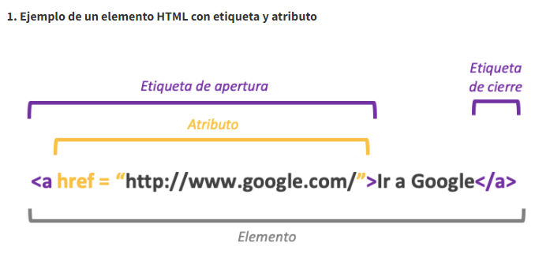

Al igual que los nuevos tipos de cam po, el elem ento input ha recibido nuevos atributos para definir su com portam iento y restricciones: autocomplete, min, max, multiple, pattern, autofocus, placeholder, required y step. Existe adem ás un nuevo atributo,list, que hace referencia a otro elem ento, perm itiendo crear un nuevo tipo de entrada de datos.
ATRIBUTO LIST Y < DATALIST>
La combinación del atributo list y un elem ento de tipo < datalist> da com o resultado un campo de texto, donde el usuario puede introducir cualquier contenido, y las opciones definidas en el < datalist> se m uestran com o una lista desplegable. Hay que tener en cuenta que la lista tiene que estar contenida en un elem ento < datalist> cuyo Elementos de formulario | HTML5 id coincide con el indicado en el atributo list: < input id="form-person-title" type="text" list="mylist"> < datalist id="mylist"> < option label="Mr" value="Mr"> < option label="Ms" value="Ms"> < option label="Prof" value="Mad Professor"> < /datalist> En este ejem plo se utiliza un campo de tipo text, pero puede ser utilizado igualmente con campos de tipo url y email.
ATRIBUTO AUTOFOCUS
El atributo booleano autofocus perm ite definir que control va a tener el foco cuando la página se haya cargado. Hasta ahora, esto se conseguía a través de JavaScript, utilizando el m étodo .focus() en un elem ento concreto, al cargarse el docum ento. Ahora es el navegador el encargado de esta tarea, y puede com portarse de m anera m ás inteligente, com o no cambiando el foco de un elem ento si el usuario ya se encuentra escribiendo en otro campo (éste era un problem a com ún con JavaScript). Únicamente debe existir un elem ento con este atributo definido en el docum ento. Desde el punto de vista de la usabilidad, hay que utilizar este atributo con cuidado. Hay que utilizarlo únicam entecuando el control que recibe el foco es el elem ento principal de la página, como en un buscador, por ejemplo.
ATRIBUTO PLACEHOLDER
Una pequeña m ejora en la usabilidad de los form ularios, suele ser colocar un pequeño texto de ayuda en algunos campos, de m anera discreta y que desaparece cuando el usuario introduce algún dato. Como con el resto de elem entos, hasta ahora era necesario utilizar JavaScript para realizar esta tarea, pero el atributo placeholder resuelve esta tarea. Es importante recordar que este atributo no sustituye a la etiqueta < label>.
ATRIBUTO REQUIRED
Este atributo puede ser utilizado en un < textarea> y en la gran m ayoría de los elem entos < input> (excepto en los de tipo hidden, image o botones com o submit). Cuando este atributo está presente, el navegador no perm ite el envío del form ulario si el campo en concreto está vacío.
ATRIBUTO MULTIPLE
Este atributo perm ite definir que un cam po puede adm itir varios valores, com o URLs o emails. Un uso m uy interesante de este atributo es utilizarlo en conjunto con el cam po < input type="file">, ya que de esta m anera nos perm ite seleccionar varios ficheros que podem os enviar al servidor al m ism o tiem po. < input type="file" multiple="multiple">
ATRIBUTO AUTOCOMPLETE
Algunos navegadores suelen incluir alguna funcionalidad de autocom pletado en algunos campos de formulario. A pesar de haber sido introducido recientem ente en el estándar de HTML5, es una característica que lleva mucho tiem po siendo utilizada, concretam ente desde la versión 5 de I nternet Explorer. Este atributo perm ite controlar el com portamiento del autocom pletado en los cam pos de texto del form ulario (que por defecto está activado).
ATRIBUTOS MIN Y MAX
Como hemos visto en el cam po < input type="number">, estos atributos restringen los valores que pueden ser introducidos; no es posible enviar el form ulario con un valor menor que min o un valor m ayor que max. Tam bién es posible utilizarlo en otro tipo de campos com o date, para especificar fechas m ínim as o m áxim as. < input type="date" min="2010-01-01" max="2010-12-31">

©2022 Irina Delgado
REFERENCIAS
Prescott, P. (2015). HTML 5. Babelcube Inc..